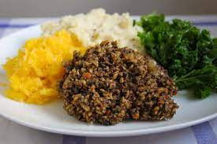

Haggis

Haggis is like a crumbly sausage, with a coarse oaty texture and a warming peppery flavour. It’s most commonly served with neeps (mashed turnip) and tatties (mashed potato) and washed down with a wee dram of your favourite whisky. Haggis is a versatile ingredient – it can be used to make a stuffing for poultry and game, or fried up for breakfast like crumbled black pudding.
Ingredients
- 1 sheep's stomach or ox secum, cleaned and thoroughly, scalded, turned inside out and soaked overnight in cold salted water
- heart and lungs of one lamb
- 450g/1lb beef or lamb trimmings, fat and lean
- 2 onions, finely chopped
Steps
-
Wash the lungs, heart and liver (if using). Place in large pan of cold water with the meat trimmings and bring to the boil. Cook for about 2 hours.
- When cooked, strain off the stock and set the stock aside.
- Mince the lungs, heart and trimmings.